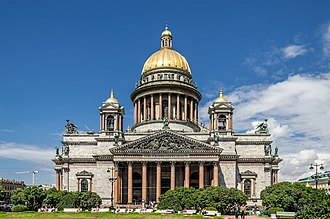

Soție de negustor, pictură de Boris Kustodiev, ilustrând cultura ceaiului în Rusia
Cultura populară și preparatele culinare
Există peste 160 de grupuri etnice diferite și popoare autohtone în Rusia. Vasta diversitate culturală a țării se întinde de la etnicii ruși cu tradițiile lor slave și ortodoxe, la tătari și bașkiri de cultură turcică musulmană, la budiștii nomazi buriați și kalmîki, la popoarele șamanice din nordul extrem și Siberia, muntenii din Caucazul de Nord, și popoarele fino-ugrice din Rusia de Nord-Vest și regiunea Volga.
Artizanatul, cum ar fi jucăria Dîmkovo, hohloma, gjel și miniaturile paleh reprezintă un aspect important al culturii populare rusești. Îmbrăcămintea populară rusească cuprinde caftan, kosovorotka și ușanka pentru bărbați, sarafane și cocoșnic pentru femei, bast shoe și valenki drept încălțăminte. Hainele cazacilor din sudul Rusiei includ burka și papaha, trăsătură comună cu popoarele din Caucazul de Nord.
Bucătăria rusă utilizează pe scară largă pește, carne de pasăre, ciuperci, fructe de padure, miere. Culturile de secară, grâu, orz și mei oferă ingredientele pentru diverse sortimente de pâine, clătite și cereale, precum și pentru cvas, bere și vodcă. Pâinea neagră este destul de populară în Rusia, în comparație cu restul lumii. Supele aromate și tocanele sunt supa de varză, ciorbele, uha, soleanka și okroșka. Smântâna se adaugă de multe ori la supe și salate. Piroșki, Blini și sîrniki sunt variante locale ale clătitelor. Puiul Kiev, pelmeni și frigăruile sunt feluri de mâncare populare din carne, ultimele două fiind de origine tătărească și, respectiv, caucaziană. Alte preparate din carne sunt sarmalele (golubțî), de obicei umplute cu carne. Ca salate, există salata à la russe (numită în Rusia „salată Olivier”), Vinegret și heringul în haină de blană.
Numeroasele grupuri etnice din Rusia au tradiții distincte legate de muzica populară. Instrumentele muzicale tipic rusești sunt guzla, balalaica, jaleika și garmoșka. Muzica populară a avut o influență semnificativă asupra compozitorilor clasici ruși, și în timpurile moderne, este o sursă de inspirație pentru mai multe formații folk, cum ar fi Melnița. Cântecele populare rusești, precum și cântecele patriotice sovietice, constituie cea mai mare parte din repertoriul renumitului cor al Armatei Roșii și al altor ansambluri populare.
Rușii au multe tradiții, inclusiv spălarea în banea, o baie cu aburi fierbinți oarecum similară cu sauna. Folclorul rusesc vechi își are rădăcinile în religiile slave păgâne. Multe basme rusești și bîline au fost adaptate pentru filme de animație, sau pentru filme artistice ale unor renumiți regizori ca Aleksandr Ptușko (Ilia Muromeț, Sadko) și Alexander Rou (Jack Frost, Vasilisa cea Frumoasă). Poeți ruși, între care Piotr Ierșov și Leonid Filatov, au făcut o serie de celebre interpretăripoetic edalebunor asme clasice, și, în unele cazuri, ca acela al llui lexandruPușkin, cau reat, de asemenea, peoeziidde inspirație folclorică și basme culte e o mare popularitate.

Arhitectura
Catedrala Sfântul Vasile, din Piața Roșie, Moscova, unul dintre cele mai populare simboluri ale țării
Arhitectura
De la creștinarea Rusiei Kievene, arhitectura rusă a fost influențată în principal de arhitectura bizantină. În afară de fortificații (kremlinuri), principalele clădiri din piatră, ale vechii Rutenii au fost biserici ortodoxe(d), cu multe cupole, de multe ori aurite sau viu colorate.
Aristotel Fioravanti(d) și alți arhitecți italieni au adus tendințele renascentiste în Rusia secolului al XV-lea, în timp ce secolul al XVI-lea a adus dezvoltarea bisericilor în formă de cort(d), culminând cu Catedrala Sfântul Vasile din Moscova. Până în acel moment, cupola în formă de ceapă(d) era complet dezvoltată și ea. În secolul al XVII-lea, „stilul de foc” al ornamentelor a înflorit în Moscova și Iaroslavl deschizând, treptat, calea barocului Narîșkin din 1690. După reformele lui Petru cel Mare(d), schimbarea stilurilor arhitecturale din Rusia a urmat, în general, tendințele din Europa de Vest.
Gustul pentru arhitectură rococo din secolul al XVIII-lea a condus la lucrările ornamentate ale lui Francesco Bartolomeo Rastrelli(d) și ale urmașilor săi. Domniile Ecaterinei cea Mare și a nepotului său, Alexandru I, au adus înflorirea arhitecturii neoclasice(d), mai ales în capitala Sankt Petersburg. A doua jumătate a secolului al XIX-lea a fost dominată de stilurile neobizantin(d) și al renașterii rusești(d). Stilurile predominante ale secolului al XX-lea au fost Art Nouveau, constructivism, și stilul imperial stalinist(d).
Cu schimbarea de valori impusă de ideologia comunistă, tradiția de conservare a fost întreruptă. Societățile independente de conservare a patrimoniului, chiar și cele care apărau doar monumentele laice, cum ar fi OIRU din Moscova, au fost desființate până la sfârșitul anilor 1920. O nouă campanie antireligioasă, lansată în 1929, a coincis cu colectivizarea țăranilor; distrugerea bisericilor din orașe a atins punctul culminant în jurul anului 1932. Multe biserici au fost demolate, inclusiv Catedrala Hristos Mântuitorul din Moscova. Numai In Moscova, pierderile între 1917-2006 sunt estimate la peste 640 de clădiri notabile (inclusiv 150 până la 200 de monumente istorice, dintr-un inventar total de 3.500) – unele au dispărut complet, altele au fost înlocuite cu replici de beton.
În 1955, un nou lider sovietic, Nikita Hrușciov, a condamnat „excesele” fostei arhitecturi academice, și sfârșitul erei sovietice a fost dominat de funcționalismul arhitectural(d) simplu. Aceasta a ajutat oarecum la rezolvarea problemei locuințelor, dar a creat un număr mare de clădiri de valoare arhitecturală scăzută, în contrast cu stilurile anterioare luminoase. În 1959, Nikita Hrușciov a lansat propria lui campanie antireligioasă(d). Prin 1964, peste 10 mii de biserici din 20 de mii au fost închise (mai ales în zonele rurale) și multe au fost demolate. Din 58 de mănăstiri și schituri ce funcționau în 1959, doar șaisprezece ani mai rămăseseră în 1964; din cele cincizeci de biserici ce funcționau la Moscova în 1959, treizeci au fost închise și șase demolate. Catedrala Sfântul Isaac(d) din Sankt Petersburg, în stil neoclasic
De la creștinarea Rusiei Kievene, arhitectura rusă a fost influențată în principal de arhitectura bizantină. În afară de fortificații (kremlinuri), principalele clădiri din piatră, ale vechii Rutenii au fost biserici ortodoxe(d), cu multe cupole, de multe ori aurite sau viu colorate.
Aristotel Fioravanti(d) și alți arhitecți italieni au adus tendințele renascentiste în Rusia secolului al XV-lea, în timp ce secolul al XVI-lea a adus dezvoltarea bisericilor în formă de cort(d), culminând cu Catedrala Sfântul Vasile din Moscova. Până în acel moment, cupola în formă de ceapă(d) era complet dezvoltată și ea. În secolul al XVII-lea, „stilul de foc” al ornamentelor a înflorit în Moscova și Iaroslavl deschizând, treptat, calea barocului Narîșkin din 1690. După reformele lui Petru cel Mare(d), schimbarea stilurilor arhitecturale din Rusia a urmat, în general, tendințele din Europa de Vest.
Gustul pentru arhitectură rococo din secolul al XVIII-lea a condus la lucrările ornamentate ale lui Francesco Bartolomeo Rastrelli(d) și ale urmașilor săi. Domniile Ecaterinei cea Mare și a nepotului său, Alexandru I, au adus înflorirea arhitecturii neoclasice(d), mai ales în capitala Sankt Petersburg. A doua jumătate a secolului al XIX-lea a fost dominată de stilurile neobizantin(d) și al renașterii rusești(d). Stilurile predominante ale secolului al XX-lea au fost Art Nouveau, constructivism, și stilul imperial stalinist(d).
Cu schimbarea de valori impusă de ideologia comunistă, tradiția de conservare a fost întreruptă. Societățile independente de conservare a patrimoniului, chiar și cele care apărau doar monumentele laice, cum ar fi OIRU din Moscova, au fost desființate până la sfârșitul anilor 1920. O nouă campanie antireligioasă, lansată în 1929, a coincis cu colectivizarea țăranilor; distrugerea bisericilor din orașe a atins punctul culminant în jurul anului 1932. Multe biserici au fost demolate, inclusiv Catedrala Hristos Mântuitorul din Moscova. Numai In Moscova, pierderile între 1917-2006 sunt estimate la peste 640 de clădiri notabile (inclusiv 150 până la 200 de monumente istorice, dintr-un inventar total de 3.500) – unele au dispărut complet, altele au fost înlocuite cu replici de beton.
În 1955, un nou lider sovietic, Nikita Hrușciov, a condamnat „excesele” fostei arhitecturi academice, și sfârșitul erei sovietice a fost dominat de funcționalismul arhitectural(d) simplu. Aceasta a ajutat oarecum la rezolvarea problemei locuințelor, dar a creat un număr mare de clădiri de valoare arhitecturală scăzută, în contrast cu stilurile anterioare luminoase. În 1959, Nikita Hrușciov a lansat propria lui campanie antireligioasă(d). Prin 1964, peste 10 mii de biserici din 20 de mii au fost închise (mai ales în zonele rurale) și multe au fost demolate. Din 58 de mănăstiri și schituri ce funcționau în 1959, doar șaisprezece ani mai rămăseseră în 1964; din cele cincizeci de biserici ce funcționau la Moscova în 1959, treizeci au fost închise și șase demolate.